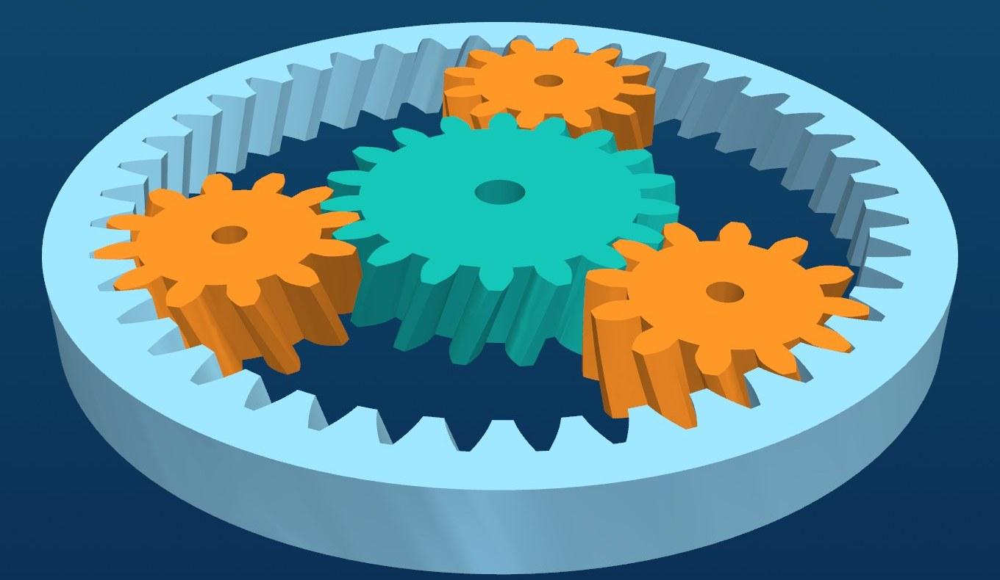

Parametric CAD that is free for everyone
From a first sketch to a finished, simulated and rendered design. OpenPara is an open-source modeller for hobbyists, students and engineers: constraints, assemblies, a gear generator, simulation and a photorealistic renderer in one program.

Everything in one program
Model it, assemble it, test it and show it, without switching tools.
Parametric parts
Constrained sketches, extrude, cut, revolve, sweep, loft, fillet and chamfer. Change a dimension or a named variable and the part rebuilds.
Assemblies
Mates, sub-assemblies and variables of their own. Positions, mate values and pattern spacing can be formulas.
Part Generator
True involute spur, helical, herringbone and ring gears from a few numbers, plus gear trains and planetary sets sized for you.
Simulation
1D beam and frame analysis, 2D finite-element analysis and 2D flow, with results you can slice and inspect.
Photorealistic renderer
Sun and sky from a date, time and place, lights, several cameras, still pictures and MP4 videos.
Open and free
GPL-3.0. Read the code, change it, share it. No account, no subscription, no limits.
Gears that fit, from the numbers you have
Type the centre distance you have room for. OpenPara picks the tooth counts, adds the profile shift needed to hit the distance exactly, and tells you where to put each gear.
- Trains of up to three gears, straight or bent at the middle gear
- Planetary sets with the planet counts that work and the ratios for each way of holding it
- Each gear opens as its own part, ready to edit
New to CAD?
You do not need an engineering degree. Type a few numbers into the Part Generator and get a real, accurate gear. Then open it and change it.
Make your first partWant the details?
Constraints, formulas, units, mates and simulations in one place, and a plain account of what has been checked and what has not.
Read the detailsTry OpenPara today
Free to download. The installer needs no administrator rights.